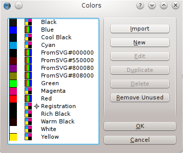

Adding and Editing Colors
If you are looking for instructions on how to change an entire color palette, then go here.
Automatic and Semi-automatic Methods
From another document
If you begin with a previously saved document, you will use its color set. If you extrapolate from this fact, then you might choose to open a document, delete its content, and File Save As under a new name.
You might even anticipate this, especially if you have a customized color palette, by saving an empty document named something like "colorscheme3.sla" or some other meaningful guide to finding it later.
You could also consider that when you import a page from another document, its colors will be imported. Lastly, even if you have already begun a new document, you can open Edit > Colors, and choose Import from the dialog to import the colors from another document.
From Imported Objects
Whenever you import an object from the Scrapbook, its colors will be added to the document. Similarly, vector graphics (SVG, EPS, and so on) will also add any colors they may contain.
|  |
In this example, following import of an SVG, we take a look at the Colors dialog (Edit > Colors), so that we can point out some particulars.
We started out with the Scribus Basic color set, then imported an SVG, which has added these colors which begin with FromSVG. Scribus does not ask you for your Ok to do this – for one thing, consider the job this would create for a many-colored graphic.
|
Notice the many blacks we have here, yet each is unique. Our newly added black, FromSVG#000000, is an RGB black, all the others are CMYK blacks. If you hover your mouse cursor over each one, you will see the differences.
| C% | M% | Y% | K% |
| Black | 0 | 0 | 0 | 100 |
| Cool Black | 60 | 0 | 0 | 100 |
| Registration | 100 | 100 | 100 | 100 |
| Rich Black | 60 | 40 | 40 | 100 |
| Warm Black | 0 | 60 | 30 | 100 |
 | Let's go a bit further here and edit a color. Either left-click or right-click on a color, and you bring up this dialog. In this particular case, you might just want to change the color name to something more meaningful. On the other hand, there is useful information in this name, considering that the hex value ‘80’ corresponds to decimal ‘128’.
You have 3 color models to choose from: RGB, CMYK, and Web Safe RGB. This last choice limits the values to those which will display the same on 8-bit and 16-bit systems.
The last thing we will mention here is the sliders to the right of the dialog for changing RGB or CMYK values. You can also click on the rainbow display, then make fine adjustments with the sliders. As you make changes, the color in the box labeled New adjusts. Click OK to switch, or Cancel to stay with the Old
|
From the Color Picker
The little eyedropper on the toolbar activates the color picker, after which clicking on some spot on the screen grabs its color. You can expect to be presented with a dialog asking for a name for this color. If you don't name it, the color will not be added, even if you click OK

Manual Methods
New Color
Here again is our Colors dialog. This time, click tne New button.
|
Click the button in the upper right of the Edit Color dialog, and an extremely long list of choices appears, consisting of all the color sets available in Scribus. Now click one of these colors and its name and RGB/CMYK values are your new color. Many of the color sets contain proprietary spot colors. |

|
Duplicate
In the Colors dialog above, click a color you wish to modify. This will of course bring up Edit Color, but click Cancel, so that you can go back and click Duplicate. Now your color name will show as Copy of ... and you can edit in the various ways we have shown and change the name.
Getting Rid of Colors
You can do this individually, by highlighting a color then clicking Delete, or you might consider reducing the number of colors on the list by clicking Remove Unused, which deletes any colors you have not actually used in your document.